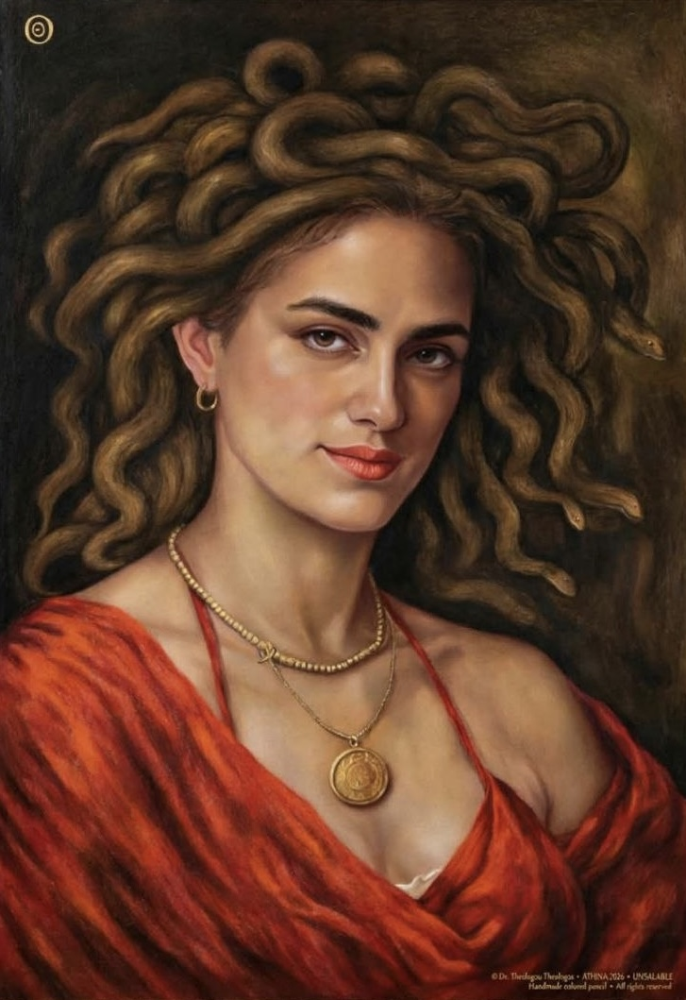
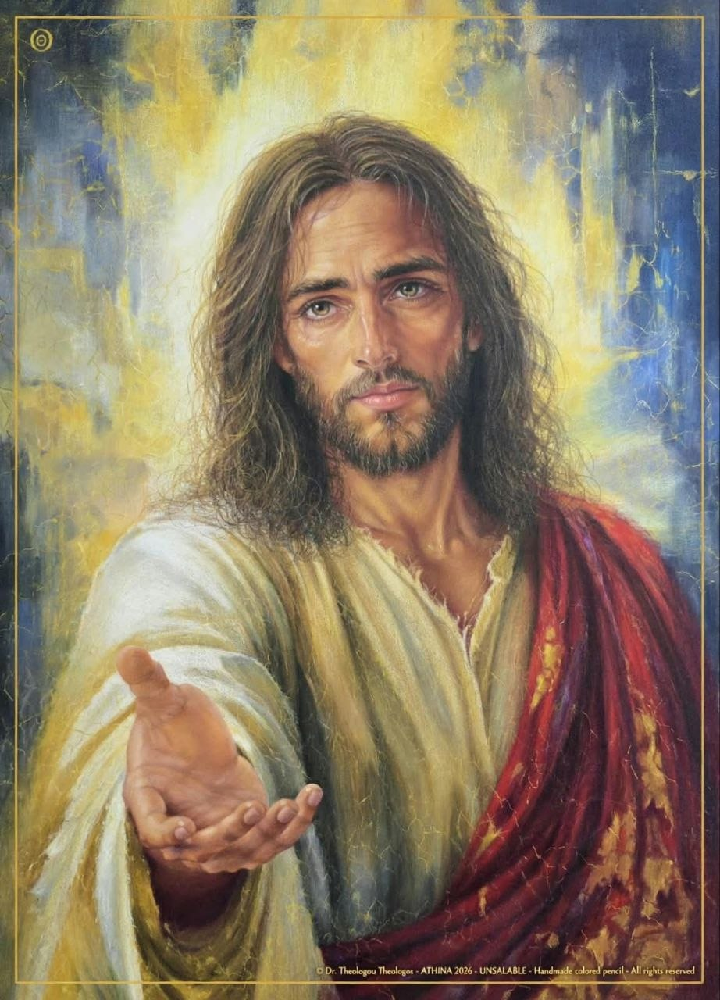
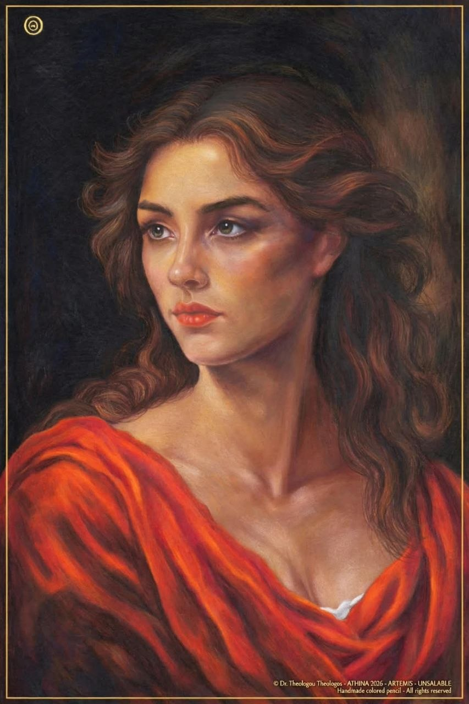
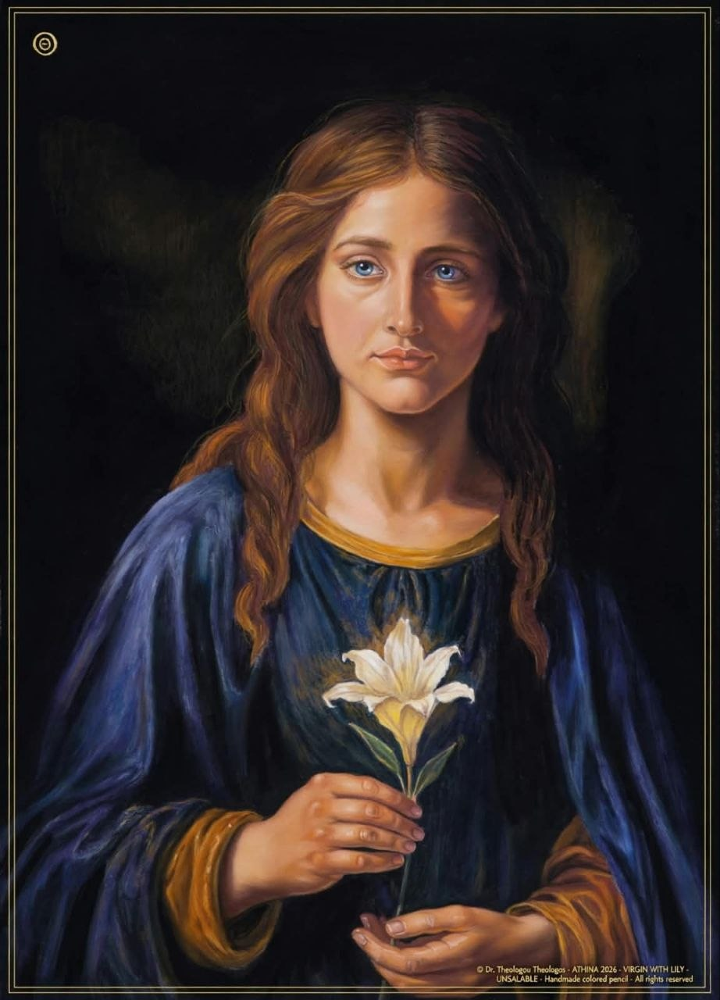
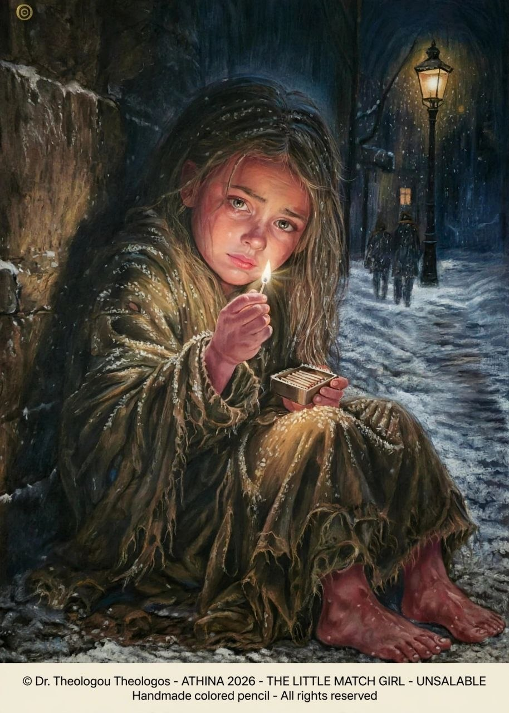

MEDUSA
Hyperrealism
Medium: Colored Pencils on Pastelmat
Dimensions: 60 × 90 cm
Year: 2026
I operate by day. I paint by night.
Can a doctor spend an entire lifetime giving nothing but life?
And could such a rare gift be accompanied by an even rarer talent: the ability to paint portraits with surgical precision?
With a scalpel?
Not merely to capture a face, but to touch the very essence of the soul?

Hyperrealism
Medium: Colored Pencils on Pastelmat
Dimensions: 60 × 90 cm
Year: 2026
A neurosurgeon who operates with brushstrokes.
A painter of the soul, revealing the quintessence of human existence through thousands of infinitesimal pencil strokes and scalpel cuts.
Every day, the doctor observes Pain.
And one day, he asks it:
— How many scalpel cuts make up the human soul?
How can I connect the neurons so that they become healing?
How can I free you from the Human Being?

Hyperrealism
Medium: Colored Pencils on Pastelmat
Dimensions: 60 × 90 cm
Year: 2026
And Pain replies:
— Cut the Human Being away from me with precision. Carve marks around his wounded aura. That way, he will remember me, and I will be set free.
The microscope no longer shows him neurons.
It shows him one single Soul.
And Pain screams:
— That one! Take it away from me!
The neurosurgeon wonders: How can I separate the Soul from Pain?
And so he takes the scalpel in one hand. And the pencil in the other.
Scalpel — Pencil.
Pain — Soul.
And he sets them against one another.
To fight.
And to win.
Both of them.
Reconciled for the first time on the same sheet of paper.
Inseparable. Indistinguishable. Invincible.
Eight thousand neurosurgical operations. Eight thousand souls alive.
Eight thousand times when the hand had to be precise, while the soul had to remain present.
Because when you give Pain a name and a form, you can drive it out of the Human Being.
That is where painting begins.

Hyperrealism
Medium: Colored Pencils on Pastelmat
Dimensions: 60 × 90 cm
Year: 2026
And yet, there is a paradox.
In the operating room, the hand must remain absolutely steady.
In painting, it must dare to tremble.
In the operating room, the eye searches for anatomy.
In painting, it searches for that which has no anatomy.
The soul.

Hyperrealism
Medium: Colored Pencils on Pastelmat
Dimensions: 60 × 90 cm
Year: 2026
That is why, whenever I look at a face, I wonder:
What has this person endured?
What have they lost?
What have they loved?
What do they carry within them?
What must they never forget?
The scalpel carves.
The pencil remembers.
The paper preserves the trace.
And the face begins to speak.
And then there is Him.
The hand reaching out toward the viewer.
Not to ask.
To offer.

Hyperrealism
Medium: Colored Pencils on Pastelmat
Dimensions: 60 × 90 cm
Year: 2026
For a moment, the viewer ceases to be merely a viewer.
They become the person toward whom the hand is reaching.
And then the work changes.
You are no longer looking at a portrait.
You feel that the portrait is looking back at you.
This moment lies at the heart of my Tetralogy:
Birth. Pain. Healing. Hope.
Four paintings, one narrative.
Four moments in the human experience, as I encounter them in the operating room and on paper.
From darkness into light.
From injury to redemption.
The outstretched hand is the same hand in all four.
Sometimes it asks for help.
Sometimes it gives.
Sometimes it heals.
Sometimes it blesses.

Hyperrealism
Medium: Colored Pencils on Pastelmat
Dimensions: 60 × 90 cm
Year: 2026
I am Theologos Theologou, neurosurgeon and Director of the Department of Neurosurgery at IASO GENERAL in Athens.
For me, painting has never been merely a parallel interest.
During every operation, I visualise the suffering soul and body — healed.
In this sense, every operation becomes, for me, a painting of perfection.
Am I a neurosurgeon who paints?
Or a painter who performs neurosurgery?
I do not know.
I only know that, in both cases, I stand before the same miracle:
The Human Being.
And I know that Science and Art are two sides of the same need:
to touch what cannot be explained and, if possible, to heal it.
One hand holds the scalpel.
The other holds the pencil.
Between them stands the Human Being.
Pain.
The Soul.
Life.

Hyperrealism
Medium: Colored Pencils on Pastelmat
Dimensions: 60 × 90 cm
Year: 2026
And on the paper, the same question remains:
Who prevailed?
Who lost?
Who claimed the spoils?
Perhaps the answer belongs to the person standing before the work.
And for a few seconds, they are no longer looking at a painting.
They are looking within themselves.
With kind regards,
Theologos Theologou
Neurosurgeon & Visual Artist
Athens, Greece
Dr. Theologos Theologou is a neurosurgeon and artist. His artistic practice explores emotion, identity, spirituality and the human experience.
Through the UNSALABLE collection, art becomes a deeply personal expression beyond commercial value.
I operate by day. I paint by night.
For artistic inquiries and collaborations